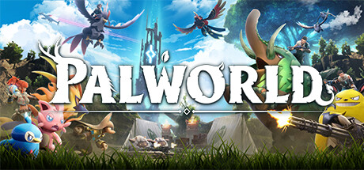

Palworld

| Release Date: | January 19th, 2024 |
| Genre: | Creature Capture Survival Crafter |
| Developer: | Pocket Pair, Inc. |
| Platform: | Steam, Xbox One |
| Details: | Official Website |
I've been highly anticipating this game for years. I ended up finding it back in 2022 sometime, when they only had two trailers out at the time. It looked like an open world creature catching game at first, but then they showed them off with GUNS and working in factories crafting gear. It was a stark contrast to what I was expecting, but I was all for it. As more info came out about it over the months, the more chaotic the game looked. My friend group and I were looking forward to it being a chaotic mess of a game that we'd play for an evening for the laughs and move on. Then the game came out, and took us all by surprise by being surprisingly well put together.
Overall Gameplay
At it's core, the game is a Survival Crafting game. You spawn into an untamed wilderness with nothing, and you start the usual survival game with punching trees, gathering stones, and crafting them together to make tools and workbenches to make gathering resources more efficient. As you progress, you eventually create your own base structure that claims an area of land for your own. This area allows you to make more advanced structures, buildings that generate more resources, more efficient crafting stations, and is even your own fast travel point!
You're not alone within this wilderness however. The islands are also inhabited by various species of Pals, creatures that have their own skills and elemental abilities. With some spheres that you're able to craft from your resource gathering, you get into the Creature Capture aspect of the game. You can capture any of the pals within the world, and they'll fight alongside you against of Pals. Though, you can also set them within your base and they'll assist you with your survival tasks based on their own skills. For example, Pals that have the Lumbering skill will cut down trees for you, helping you gather wood within your base.
As your base grows and your team of Pals get stronger, you'll find yourself wanting to explore the land more. The entire map is open to you, giving you an Open World Experience. You can climb any surface, swim across the oceans, and place your base wherever you like within the world. Though traveling on your own is slow and tedious, so with the help of your Pals, you can mount them to move faster, fly between peaks, or travel the oceans further than ever. Throughout the world you'll find various different fast travel locations, dungeons with rarer resources than the surface, and boss fights against some more difficult Pals. These locations will reward you with resources you can't get elsewhere, allowing you to craft more unique weapons and structures to further enhance your base.
As you can see, the game has these different aspects of gameplay that differ quite a bit from each other, but by progressing in one area, you're rewarded within all of them. Exploring gives you more resources and new Pals, catching new Pals unlocks new skills and speeds up resource gathering, and developing a base gives you access to more tools to explore difficult areas and capture stronger Pals. The game does ease you into this gameplay loop rather nicely, keeping the more advanced tools locked behind the technology tree, but you never feel like your forced into one style of gameplay.
There isn't much of a story or soundtrack to comment on. There's an end goal of defeating the Pal Trainers in each of the towers scattered around the map, but there's no real driving force for the player to seek them out besides for their own personal challenge. The sounds of the game are fairly okay, with the sound effects all in place, but there's hardly any music within the game. There's some generic battle themes when you're fighting Pals, but nothing while exploring the world itself. Some of the Pal's cries are rather generic, but their designs can also be generic so kind of fits in that way.
Personal Thoughts
The game takes inspiration from a lot of other games, combining their genres into this interesting experience. It takes the Survival Crafting aspects of Ark Survival, adds the Open-World Exploration aspects of Breath of the Wild, and incorporates the Creature Catching of Pokemon all into one, each of which complimenting the other. The designs of the Pals are quite nice, haven't really seen one that seems out of place of the setting. It's a fun gameplay loop, as is a chaotic experience that I was hoping for. However, that doesn't mean it isn't without flaws.
The game slows down quite considerably as you progress throughout the game. The amount of items that require technology points to unlock quickly outpaces the amount of technology points you gain, leaving you needing to grind out levels just to unlock all the components you need for the next base upgrade. Character strength seems to get outpaced by difficult areas quickly, as it seems no matter what your level is, wild Pals can easily take you out if you're not careful. There's also a number of quality of life things that seem to be missing, requiring you to do repetitive or tedious tasks to complete. For example, to upgrade your structure's from wood to stone, you have to deconstruct all the wood structures and replace them with stone. That's practically rebuilding your base, which takes a lot of time to accomplish. There's also a number of stability & save data bugs, but the game is still in Early Access so that's to be expected.
In all, Palworld is a enjoyable blend of various different genres that build off each other and provides a fun feedback loop that continuously rewards the player in interacting with its systems. It has some balancing and quality of life flaws, but is an impressive Early Access game that's relatively affordable for the amount of content you have access to. If you're a fan of Survival Crafting games, this might be a nice twist on the genre that you'd find enjoyable.